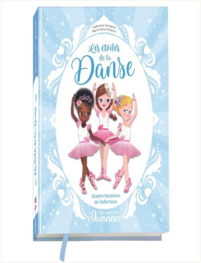
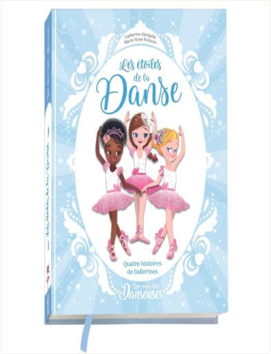

Une, deux, trois danseuses - Les étoiles de la danse - 4 histoires de ballerinesCatherine Kalengula  |


 Made with Delicious Library
Made with Delicious LibraryNancy, State zipflap congrotus delicious library Thomas, Julien
Une, deux, trois danseuses - Les étoiles de la danse - 4 histoires de ballerinesCatherine Kalengula |
Made with Delicious LibraryNancy, State zipflap congrotus delicious library Thomas, Julien